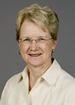
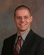

Faculty News
February 2007 Issue
Marjorie
Corman Aaron Professor of Practice and Director, Center for Negotiation & Problem Solving Marjorie’s article, Using Decision Trees as Tools for Settlement, 14 Alternatives to High Cost Litig. 71 (1996) (with David P. Hoffer), was cited in Robert L. Haig, Successful Partnering between Inside and Outside Counsel (West Group, 2007 Supp.). Profile of Professor Aaron :: Center for Practice in Negotiation & Problem Solving |

Timothy K. Armstrong Assistant Professor of Law |
 |
Marianna
Brown Bettman Invited Professor of Law |
 |
Lou
Bilionis Dean and Nippert Professor of Law Lou’s article, Lawyers, Arbitrariness, and the Eighth Amendment, 75 Tex. L. Rev. 1301 (1997) (with Richard A. Rosen), was cited in Leona D. Jochnowitz, Missed Mitigation: Counsel's Evolving Duty to Assess and Present Mitigation at Death Penalty Sentencing, 43 Crim. L. Bull. 1 (2007). |
 |
Barbara Black Charles Hartsock Professor of Law and Director, Corporate Law Center Barbara attended the AALS Annual Meeting in Washington, D.C. She was quoted in Neale Sold $19 Million in Company Stock, Post-Tribune, Jan. 31, 2007. |
 |
Kristin Kalsem Professor of Law |
 |
A.
Christopher Bryant Professor of Law Chris’s article, Remanding to Congress: The Supreme Court's New "On the Record" Constitutional Review of Federal Statutes, 86 Cornell L. Rev. 328 (2001) (with Timothy J. Simeone), was cited in Kenneth A. Bamberger, Regulation as Delegation: Private Firms, Decisionmaking, and Accountability in the Administrative State, 56 Duke L.J. 377 (2006). |
 |
Paul
L. Caron Charles Hartsock Professor of Law and Director, Faculty Projects
Paul launched two blogs as part of his Law Professor Blogs Network:
Paul published several issues of his Tax Law Abstracts:
Paul was quoted in IRS Must File Answers in Small Cases, Nat’l L.J., Jan. 30, 2007. His article, New Decision Further Clouds Deductibility of Expenses During Administration, 11 Est. Plan. 164 (1984), was cited in George Gleason Bogert, George Taylor Bogert & Amy Morris Hess, The Law of Trusts and Trustees (West, 3rd ed. 2006 Supp.). |
Margaret Drew Professor of Clinical Law and Director, Domestic Relations/Violence
Clinic At the invitation of Judge Jerry Bowles, Margaret attended the Jefferson County (KY) domestic violence fatality review team meeting. She also attended a conference on workplace violence issues at Sinclair Community College in Dayton. Margaret was appointed by the ABA Family Law Section to a workgroup charged with forging a long term relationship with the American Psychological Association on issues of abuse, neglect and endangerment. |
 |
Tom Eisele Professor Law |
 |
Rafael Gely Judge Joseph P. Kinneary Professor of
Law
|
 |
Mark
A. Godsey Professor of Law and Faculty Director, Lois and Richard Rosenthal Institute
for Justice, Ohio Innocence Project Mark presented Law Review Placement Strategies at the New Law Professors Section Meeting on Scholarship and the New Law Professor: Of Blogs, Books, Networks, and the Placement Game (with Dorothy Brown (Washington & Lee), Paul Caron (Cincinnati), Robert Chesney (Wake Forest) & Lawrence Solum (Illinois)) at the AALS Annual Meeting in Washington, D.C. He presented Reliability Lost in the Age of False Confessions at a Symposium at Chapman University School of Law on Miranda at 40: Applications in a Post-Enron, Post-9/11 World. Mark was quoted in two articles:
Profile of Professor Godsey :: Lois and Richard Rosenthal Institute for Justice/Ohio Innocence Project |
Emily
Houh Professor of Law Emily’s article, Critical Race Realism: Re-Claiming the Antidiscrimination Principle Through the Doctrine of Good Faith in Contract Law, 66 U. Pitt. L. Rev. 455 (2005), was cited in N. Jeremi Duru, Fielding a Team for the Fans: The Societal Consequences and Title VII Implications of Race-considered Roster Construction in Professional Sport, 84 Wash. U. L. Rev. 375 (2006). |
 |
Max Huffman Visiting Assistant Professor of Law |
Christo Lassiter Professor
of Law
|
William J. Rands Professor
of Law |
 |
Ronna Greff Schneider Professor
of Law |
 |
Michael
E. Solimine Donald P. Klekamp Professor of Law,
Director, Faculty Development and Extern Program Several of Michael’s works were cited:
|
Adam
N. Steinman Assistant Professor of Law Adam’s article, Sausage-Making, Pigs’ Ears, and Congressional Expansions of Federal Jurisdiction: Exxon Mobil v. Allapattah and its Lessons for the Class Action Fairness Act, 81 Wash. L. Rev. 279 (2006), was cited in Brian E. Foster, Serious Mischiefs: Exxon Mobil Corp. v. Allapattah Services, Inc., Supplemental Jurisdiction, and Breaking the Promise of Finley, 81 Notre Dame L. Rev. 2013 (2006). |
Suja
Thomas Professor of Law |
 |
Joseph
P. Tomain Dean Emeritus and Wilbert and Helen
Ziegler Professor of Law Profile of Dean Emeritus and Wilbert and Helen Ziegler Professor Tomain |
 |
Verna
L. Williams Professor of Law Verna attended the AALS Annual Meeting in Washington, D.C. Her articles, Private Choices, Public Consequences: Public Education Reform and Feminist Legal Theory, 12 Wm. & Mary J. Women & L. 563 (2006), and Reading, Writing, and Reparations: Systemic Reform of Public Schools as a Matter of Justice, 11 Mich. J. Race & L. 419 (2006), were cited in Law Review Digests, 36 J.L. & Educ. 113 (2007). |
Faculty News is edited by Paul
L. Caron, Charles Hartsock Professor of Law and Director of Faculty Projects.
Back issues can be accessed from the Faculty News Archive.
| © Copyright 2007, University of Cincinnati College of
Law, Clifton Avenue & Calhoun Street, Cincinnati, OH 45221 |